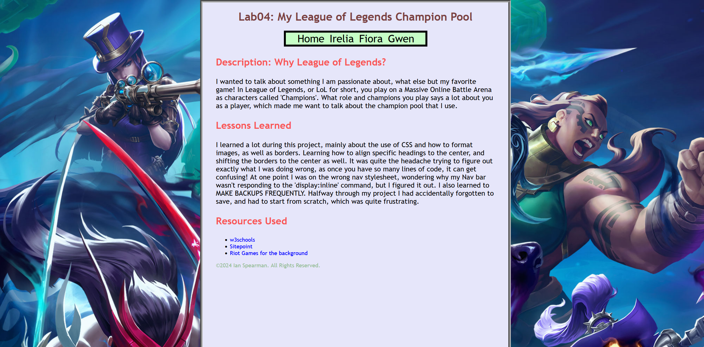
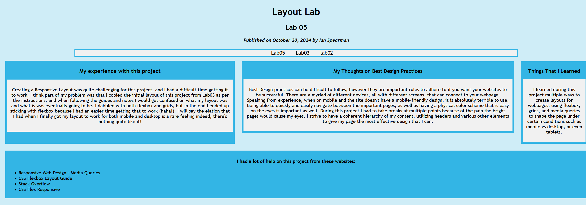

This is one of my personal favorites of all the websites I created, and it was my first experience utilizing more complex html, such as displaying images and meshing multiple pages together to create a larger website.

For this project I was required to experiment with different types of layouts for websites; picking from flexbox, media queries, and grid layouts. I personally went with flexbox as I found it more intuitive to work with, although I remember having quite the headache getting it to work initially.